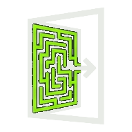

404 Código de errorEsta puerta no lleva a ningún sitio
La página que buscas no existe o la han movido. Pero hay otras puertas.
Busca la salida con la linterna
404 Código de errorLa página que buscas no existe o la han movido. Pero hay otras puertas.
Busca la salida con la linterna